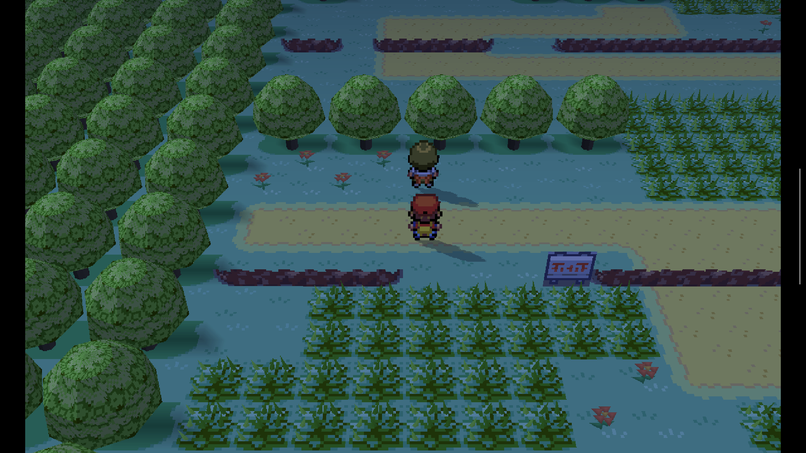

Back to builder
Verified 3D scenery
Real AYN Thor tests and captures. Only the builds listed here passed this scenery test set. Coverage remains incomplete; other candidates stay unpublished until they pass. GIFs use 10 FPS for file size and do not demonstrate runtime frame rate.
frlg
Field / battle / active minimum sampled FPS: 59.7 / 59.8 / 59.8. Zero logged work over the frame budget and zero active audio underruns. Strength, Rock Smash and multi-rock visibility verified.
Matching ROM-free build bundle · 2D/3D, seasons and battle gallery

Strength movement

Rock Smash

Source aeaac4dc17ae00c8f01f82466312228db90d394d; CI build.
Build checksums and measurement scope